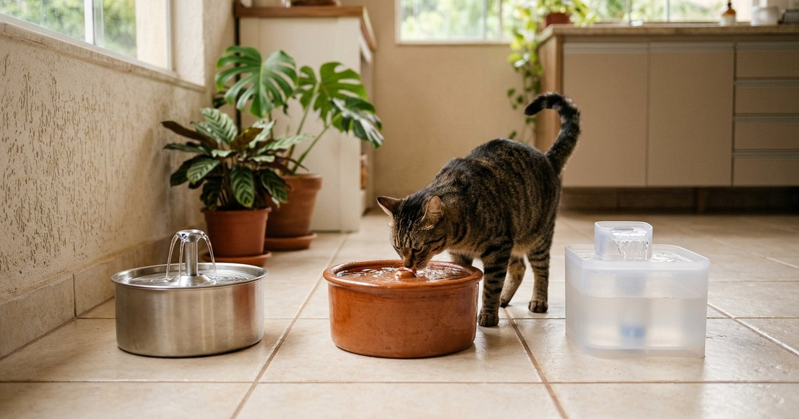
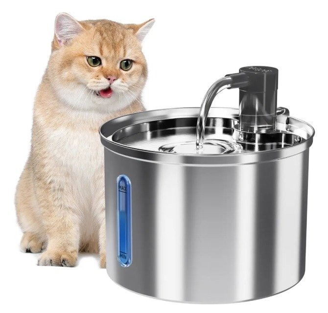
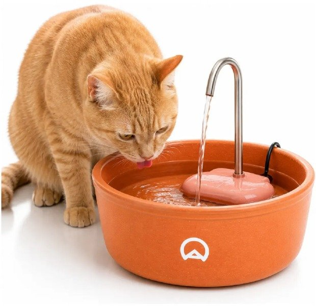
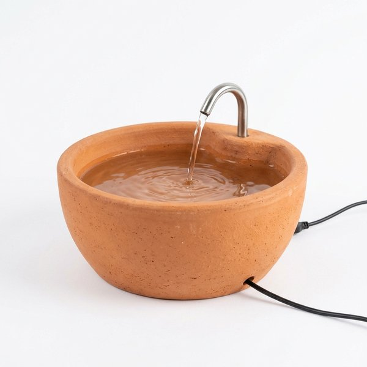
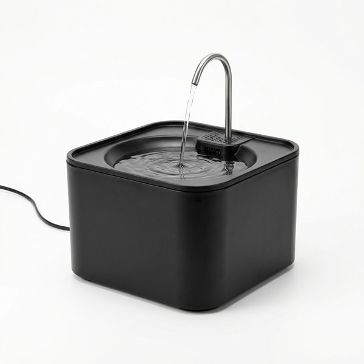
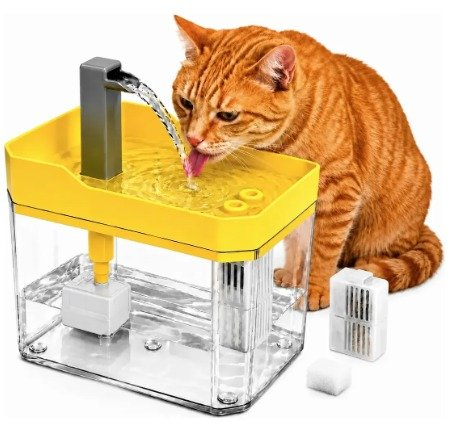

Inox e cerâmica são os dois materiais mais recomendados para bebedouros de gato, ambos superam o plástico em higiene. A escolha entre eles depende mais da sua prioridade, praticidade ou estabilidade, do que de uma diferença real de qualidade da água entregue ao seu gato.
Key Takeaways
- O aço inox é resistente a manchas e bactérias, fácil de limpar e não libera substâncias na água (Loja Gato e Vida, retrieved 2026-08-20).
- A cerâmica esmaltada tem superfície lisa e não porosa, o que dificulta a proliferação de bactérias quando bem higienizada (ND Mais, retrieved 2026-08-20).
- Cerâmica é mais pesada e estável (reduz derramamento) e conserva melhor a temperatura da água.
- Plástico é desaconselhado por reter odores e arranhar com facilidade, criando pontos de acúmulo de bactérias.
- Para gatos com bigodes sensíveis, ambos os materiais são preferíveis ao plástico, que costuma ser apontado como gatilho de fadiga de bigode em tigelas fundas.
Resumo em uma linha: Inox vence em praticidade de limpeza e leveza; cerâmica vence em estabilidade e conservação de temperatura. Os dois empatam em higiene quando bem cuidados.
Escolha inox se: você prioriza limpeza rápida no dia a dia, resistência a quedas e não se importa com o material esquentando ou esfriando junto com o ambiente.
Escolha cerâmica se: seu gato costuma derrubar o bebedouro, você quer água mais fresca por mais tempo, e você tem cuidado para não derrubar a peça durante a limpeza.
melhor bebedouro automático para pet
O aço inoxidável resiste a manchas e ao acúmulo de bactérias, é fácil de higienizar no dia a dia e dura muitos anos sem degradar. É a escolha mais recomendada quando praticidade de limpeza é a prioridade, já que basta água e sabão neutro (ou uma passada rápida na esponja) para remover resíduos de saliva, ração e biofilme que se formam na superfície com o uso diário.
Outro ponto a favor do inox é o peso reduzido em comparação com a cerâmica, o que facilita o transporte do bebedouro até a pia para lavagem completa. Em compensação, essa leveza também é o principal ponto fraco do material: gatos maiores ou mais afoitos na hora de beber podem empurrar ou virar um bebedouro de inox com mais facilidade do que um de cerâmica, especialmente em modelos sem base antiderrapante.
Não muito bem. Por ser um bom condutor térmico, o inox tende a acompanhar a temperatura ambiente rapidamente, então a água esquenta mais rápido em dias quentes e esfria mais rápido em dias frios, na comparação direta com a cerâmica. Isso não compromete a segurança da água, mas pode reduzir o apelo do bebedouro em climas mais quentes, quando o gato tende a preferir água fresca.
A cerâmica esmaltada, quando bem mantida, oferece excelente higiene graças à superfície lisa e não porosa. Também é mais pesada, o que reduz o risco de o próprio gato virar o bebedouro, e conserva melhor a temperatura da água, mantendo-a fresca por mais tempo do que um recipiente de inox no mesmo ambiente.
O ponto de atenção com a cerâmica está no esmalte: se a peça sofrer uma lascadura ou trinca, a parte exposta do material se torna porosa e passa a reter bactérias e odores, revertendo boa parte da vantagem higiênica do material. Por isso, vale inspecionar a peça periodicamente e substituir o bebedouro se notar rachaduras, mesmo pequenas, na superfície esmaltada.
Depende do uso. Para quedas no chão, sim, a cerâmica quebra com mais facilidade do que o inox. Mas no uso normal, apoiada em uma superfície estável, o peso da cerâmica na verdade reduz o risco de acidentes, porque o bebedouro não desliza nem vira com facilidade quando o gato bebe ou brinca por perto. O maior risco de dano costuma acontecer durante o transporte para a pia na hora da limpeza, então vale segurar a peça com as duas mãos nesse momento.
| Critério | Inox | Cerâmica |
|---|---|---|
| Facilidade de limpeza | Muito alta | Alta (se bem esmaltada) |
| Durabilidade | Muito alta | Alta, mas quebrável |
| Estabilidade (não vira) | Média | Alta (mais pesada) |
| Conservação de temperatura | Baixa | Alta |
| Retenção de odor | Muito baixa | Baixa |
Bebedouros de plástico arranham com o uso, criando microrranhuras onde bactérias se acumulam mesmo após a limpeza, por isso costumam reter odor e ser desaconselhados em comparação a inox e cerâmica (CSA Jardins, retrieved 2026-08-20). Além do acúmulo de bactérias, o plástico também é apontado por alguns comportamentalistas como possível gatilho de desconforto para gatos com bigodes sensíveis, já que tigelas plásticas fundas obrigam o animal a pressionar os bigodes contra a borda repetidamente durante a bebida.
Se você já tem um bebedouro de plástico e quer fazer a transição, não é preciso trocar de uma vez: pode ser mais prático substituir primeiro o recipiente de água (de uso mais frequente) por inox ou cerâmica, e trocar o comedouro de ração depois, conforme o orçamento permitir.
A decisão fica mais simples quando você parte do comportamento do seu gato, não apenas da preferência estética. Gatos que bebem com pressa, empurram a tigela ou têm o hábito de brincar perto do bebedouro se beneficiam do peso extra da cerâmica, que reduz derramamento e board de água pelo chão. Já em casas com crianças, outros pets maiores circulando por perto, ou em cozinhas movimentadas onde o bebedouro pode ser derrubado acidentalmente, o inox costuma ser mais seguro por não estilhaçar como a cerâmica em caso de queda.
Vale considerar também a rotina de limpeza. Se você prefere lavar o bebedouro rapidamente todo dia, o inox seca mais rápido e não tem esmalte para se preocupar. Se prefere uma limpeza mais espaçada, a cerâmica esmaltada de qualidade mantém a superfície lisa por mais tempo, desde que não sofra impactos.
Essa é uma decisão independente do material. Fontes com bomba d'água, disponíveis tanto em inox quanto em cerâmica, estimulam gatos que preferem água em movimento, um comportamento associado ao instinto de evitar fontes de água parada, historicamente ligadas a maior risco de contaminação na natureza. Já a tigela parada tradicional é mais simples de manter e não depende de energia elétrica, o que pode ser preferível para quem tem poucos gatos e já garante trocas de água frequentes ao longo do dia.
Além do material da carcaça, a facilidade de limpeza depende diretamente de quantas peças a fonte tem e de como elas se encaixam. A maioria dos modelos, em inox ou cerâmica, é composta por três partes: o reservatório (ou carcaça), o filtro de carvão ativado e a bomba submersa. Quanto menos parafusos e vedações independentes, mais rápida é a limpeza semanal completa.
No inox, a desmontagem costuma ser mais simples porque as peças são leves e os encaixes geralmente são por pressão, sem rosca. Isso facilita tanto a limpeza diária rápida quanto a limpeza completa semanal, incluindo passar a bomba e o filtro em água corrente. Na cerâmica, o número de peças é parecido, mas a carcaça pesada exige mais atenção ao erguer e virar a peça para escoar a água durante a limpeza, já que uma queda nessa etapa é o principal risco de dano ao esmalte.
Na hora de comprar, vale checar se o fabricante indica a fonte como lavável na parte superior da lava-louças (sem a bomba) — isso reduz bastante o tempo de manutenção, independente do material escolhido.
No mercado brasileiro, a maioria dos modelos de inox e cerâmica com bomba d'água fica entre R$ 100 e R$ 300, variando principalmente pela capacidade do reservatório (de 1,5 a 3 litros, em geral) e pela presença de filtro trocável incluso. Dentro dessa faixa, cerâmica tende a custar um pouco mais do que inox em capacidade equivalente, por conta do processo de esmaltação. Capacidade maior e marcas com filtro de reposição mais acessível costumam justificar pagar mais dentro da faixa, especialmente em casas com dois ou mais gatos.
Selecionamos cinco fontes vendidas no Mercado Livre: uma de inox e duas de cerâmica, os materiais que recomendamos, e duas de plástico, para quem quer gastar menos. Os dados abaixo vêm dos próprios anúncios, consultados em 25/10/2026. Preço e estoque mudam com frequência. Não testamos os aparelhos.

| Preço | R$ 128,59 (de R$ 199), ou 12x de R$ 12,71 |
|---|---|
| Material | Aço inoxidável |
| Capacidade | 3 litros |
| Alimentação | Bomba de 5V com cabo USB, sem adaptador de tomada |
| Filtro | 1 filtro |
| Medidas | 20 x 20 x 16 cm (19 cm de diâmetro) |
| Avaliação | 4,9 com 3.114 avaliações (inclui opiniões de outros países), mais de 10 mil vendidos |
| Garantia | 30 dias de fábrica |
| Vendedor | Loja oficial New Pet (MercadoLíder Platinum) |
Por que indicamos: é a mais vendida da categoria Bebedouros e Comedouros no Mercado Livre e a mais bem avaliada dos cinco modelos. Tem a maior capacidade da lista, e a janela lateral mostra o nível da água sem abrir a tampa.
Pontos de atenção:
🐾 Fonte de inox Newpet 3 L: veja o preço de hoje no Mercado Livre.
Ver preço no Mercado LivreLink de afiliado: podemos receber uma comissão por compras feitas através deste link, sem custo adicional para você.

| Preço | R$ 189,90, ou 6x de R$ 31,65 sem juros |
|---|---|
| Material | Cerâmica |
| Capacidade | 2,5 litros |
| Alimentação | USB |
| Filtro | 1 filtro de carvão ativado |
| Medidas | 23,5 x 23,5 x 19,5 cm |
| Avaliação | 4,8 com 452 avaliações, mais de 1.000 vendidos |
| Garantia | 3 meses de fábrica |
| Vendedor | Vendas Vale Eletro Shop (MercadoLíder Platinum) |
Por que indicamos: é a maior fonte de cerâmica da lista, com a mesma nota da Patas Fiéis (4,8) e três vezes mais avaliações. A tigela larga e pesada é a combinação que o artigo recomenda para gatos que derrubam o bebedouro.
Pontos de atenção:
🐾 Fonte de cerâmica Amicus Aqua Clay 2,5 L: veja o preço de hoje no Mercado Livre.
Ver preço no Mercado LivreLink de afiliado: podemos receber uma comissão por compras feitas através deste link, sem custo adicional para você.

| Preço | R$ 105,99 (de R$ 129,88), ou 12x de R$ 10,47 |
|---|---|
| Material | Cerâmica (barro), cor terracota |
| Capacidade | 1,2 litro |
| Alimentação | USB, 127/220V |
| O que vem no kit | Fonte, filtro de carvão ativado, comedouro antiformiga de 80 ml e rasqueadeira |
| Medidas e peso | 17 x 17 x 8 cm, 1,2 kg |
| Avaliação | 4,8 com 153 avaliações, mais de 500 vendidos |
| Garantia | O anúncio informa "sem garantia" |
| Vendedor | Patas Fiéis (MercadoLíder Platinum) |
Por que indicamos: é a fonte de cerâmica mais barata dos dois, e o kit já traz um comedouro e uma escova. A fonte pesa 1,2 kg, o que ajuda a não virar.
Pontos de atenção:
🐾 Fonte de cerâmica Patas Fiéis 1,2 L com kit: veja o preço de hoje no Mercado Livre.
Ver preço no Mercado LivreLink de afiliado: podemos receber uma comissão por compras feitas através deste link, sem custo adicional para você.
As fontes de plástico custam bem menos, mas têm os problemas que explicamos em Por Que Evitar Plástico: o plástico arranha com o uso e acumula bactérias nos riscos. Se o orçamento só permite plástico, três cuidados ajudam:

| Preço | R$ 38,70 (de R$ 99,90) |
|---|---|
| Material | Plástico |
| Capacidade | 1,8 litro |
| Alimentação | Tomada, bivolt |
| Medidas e peso | 16 cm de diâmetro, 12 cm de altura, 300 g |
| Base antiderrapante | Sim |
| Avaliação | 4,8 com 5.826 avaliações, mais de 10 mil vendidos |
| Garantia | 90 dias do vendedor |
| Vendedor | Loja oficial AGBE (MercadoLíder Platinum) |
Por que indicamos: é o mais barato dos cinco e o que tem mais avaliações, quase 6 mil. A base antiderrapante compensa em parte o peso baixo do plástico.
Ponto de atenção: com 300 g, é leve. Coloque num canto onde o gato não consiga empurrar.
🐾 Fonte AGBE AG-200 1,8 L: veja o preço de hoje no Mercado Livre.
Ver preço no Mercado LivreLink de afiliado: podemos receber uma comissão por compras feitas através deste link, sem custo adicional para você.

| Preço | R$ 50,42 (de R$ 89), ou 12x de R$ 4,97 |
|---|---|
| Material | Plástico transparente, em 3 cores |
| Capacidade | 1,5 litro |
| Alimentação | Tomada (veja o alerta de voltagem abaixo) |
| Filtro | 1 filtro de esponja |
| Medidas e peso | 17 x 12 x 12 cm, 500 g |
| Avaliação | 4,7 com 310 avaliações, mais de 1.000 vendidos |
| Garantia | 30 dias do vendedor |
| Vendedor | AVEREL (MercadoLíder Gold) |
Por que indicamos: o reservatório transparente mostra quando a água está acabando, e o anúncio está entre os mais vendidos da categoria no Mercado Livre.
Pontos de atenção:
🐾 Fonte Premium Silenciosa 1,5 L: veja o preço de hoje no Mercado Livre.
Ver preço no Mercado LivreLink de afiliado: podemos receber uma comissão por compras feitas através deste link, sem custo adicional para você.
Esta comparação foi construída cruzando informações de fabricantes e lojistas especializados em produtos pet, orientações de comportamento felino sobre preferência por água corrente e fadiga de bigode, e boas práticas de higienização recomendadas para recipientes de uso diário de animais domésticos. Não se trata de um teste laboratorial de contagem bacteriana entre os materiais, mas de uma síntese de fontes públicas e específicas sobre o tema, para ajudar na decisão de compra. Os dados dos cinco modelos à venda vêm dos anúncios do Mercado Livre consultados em 25/10/2026; não testamos os aparelhos. Veja nossa política editorial e de afiliados para entender como avaliamos e selecionamos produtos.
Os dois são equivalentes em higiene quando bem cuidados. O inox resiste naturalmente a bactérias e não precisa de esmalte para ficar liso; a cerâmica esmaltada também tem superfície não porosa, mas só mantém a higiene se o esmalte estiver intacto, sem trincas ou lascas.
É mais frágil que o inox em caso de queda, mas o peso maior da cerâmica reduz justamente o risco de o gato derrubar o bebedouro durante o uso normal. O maior risco de quebra costuma acontecer na limpeza ou no transporte, não durante a bebida do gato.
O ideal é higienizar o reservatório e trocar a água a cada 2 ou 3 dias, e fazer uma limpeza mais completa, incluindo o filtro e a bomba, uma vez por semana. Isso vale tanto para inox quanto para cerâmica, já que resíduos de ração, saliva e pelos se acumulam nos dois materiais com o tempo.
Para muitos gatos, sim. A água corrente estimula a ingestão, já que gatos costumam preferir água em movimento por instinto de evitar fontes paradas, associadas a maior risco de contaminação na natureza. Isso ajuda na prevenção de problemas urinários, mas o material do recipiente (inox ou cerâmica) continua sendo decisão independente do tipo de fonte.
As fontes de inox costumam ter menos peças e encaixes mais simples, o que torna a desmontagem semanal (reservatório, filtro e bomba) mais rápida. Modelos de cerâmica com bomba embutida tendem a ter o mesmo número de peças, mas exigem mais cuidado ao manusear a carcaça durante a limpeza, por ser mais frágil a impactos. Em ambos os casos, prefira modelos sem parafusos ou vedações complexas, que facilitam a limpeza a cada 2 ou 3 dias.
A maioria dos modelos de inox e cerâmica com bomba fica entre R$ 100 e R$ 300 no Brasil, variando por capacidade do reservatório, marca e presença de filtro trocável. Modelos de cerâmica tendem a custar um pouco mais que os de inox com capacidade equivalente, refletindo o processo de fabricação e o acabamento esmaltado.
Se a prioridade é praticidade de limpeza diária e resistência a quedas, inox é a escolha mais segura. Se você prioriza estabilidade e conservação de temperatura, a cerâmica esmaltada de boa qualidade é equivalente em higiene e ganha nesses dois pontos. Na dúvida, observe o comportamento do seu gato: um animal mais afoito ou que já derrubou bebedouros antes tende a se dar melhor com cerâmica; quem prioriza limpeza rápida e não se importa com o peso menor, com inox.
Quer ver preço e ficha de cada um? Volte aos cinco modelos à venda no Mercado Livre: inox, cerâmica e plástico.
melhor bebedouro automático para pet · comedouro x bebedouro automático: qual a diferença
Escrito pela Equipe Smart Pet Gadgets. Veja nossa política editorial e como verificamos as fontes citadas neste artigo.
Nildo Alves — curadoria de produtos pet no Smart Pet Gadgets. Testa e pesquisa produtos para cães e gatos, cruzando especificações de fabricante com boas práticas veterinárias e dados de mercado.
Sobre o Smart Pet Gadgets · Contato · Política editorial e de afiliados